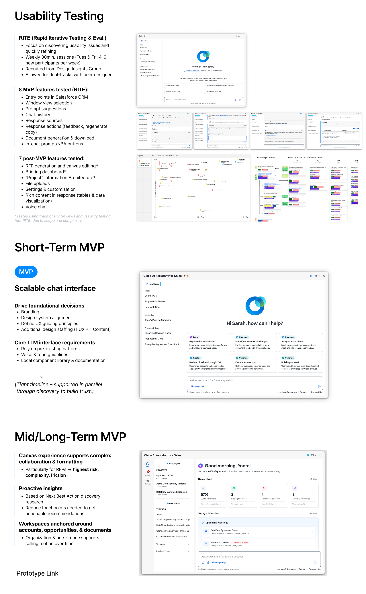

Sales AI Assistant Proposal Cisco | 2024 - 2025 Framing the Problem Q. What percentage of your working time do you spend looking for information? A. At Cisco, sellers spend nearly 20% of their time looking for accurate, holistic information about customers and solutions across 30+ internal tools. How Might We unify fragmented customer data to enable more efficient & effective customer engagement for Cisco sellers? Collaborators Business team Dev team Content designer UX researchers UX designers (Led end-to-end UX design, facilitated stakeholder workshops, synthesized user insights, defined product vision, and developed high-fidelity prototypes) Direction Business Vision: AI chat interface embedded across 30+ tools Agentic Orchestration: User, customer, solution & enablement agents -> provide access to disparate data via chat Tasks: Extract Data-Driven Insights: Uncover systemic seller pain points and workflows. Deliver Seamless MVP Experiences: Validate core chat functionalities in high-priority environments. Explore Advanced AI Use Cases: Identify high-impact opportunities for agentic orchestration. Architect for Scalability: Design future-proof frameworks adaptable across 30+ internal enterprise tools. Insights Review data-related painpoints Humans and the loop 4 core use cases Generative Research Art of Possible Workshop with stakeholders Solutions Usability Testing Short-Term MVP Mid/Long-Term MVP  Learning The Power of Researcher Partnership: Collaborating closely with UX researchers proved essential in transforming raw data into actionable, high-impact design strategies. This cross-functional partnership allowed for deeper empathy with users and ensured that product decisions were rooted in validated insights rather than assumptions. Embracing Diverse Perspectives for Robust UX: Synthesizing contrasting and diverse opinions from engineering, security, and product teams significantly refined the solution. Welcoming these varied viewpoints helped identify edge cases early on and led to a more balanced, compliant, and inclusive user experience. ↑ Back to Top